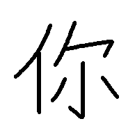

← Back to Menu
Write the correct Chinese character for the meaning and pinyin shown below...
Question 1
Write the Chinese word.
Meaning:
"you"
Pinyin:
nǐ
Answer 1

Meaning:
"you"
Pinyin:
nǐ
Hint in: 6s